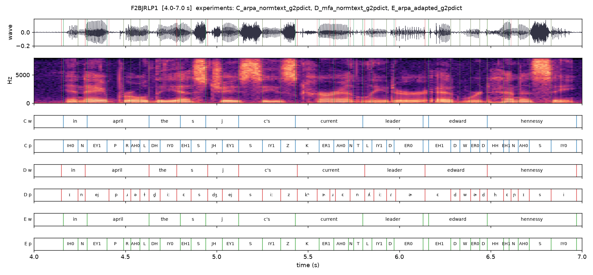
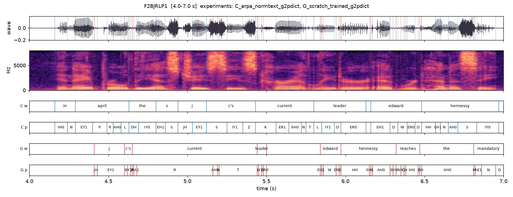
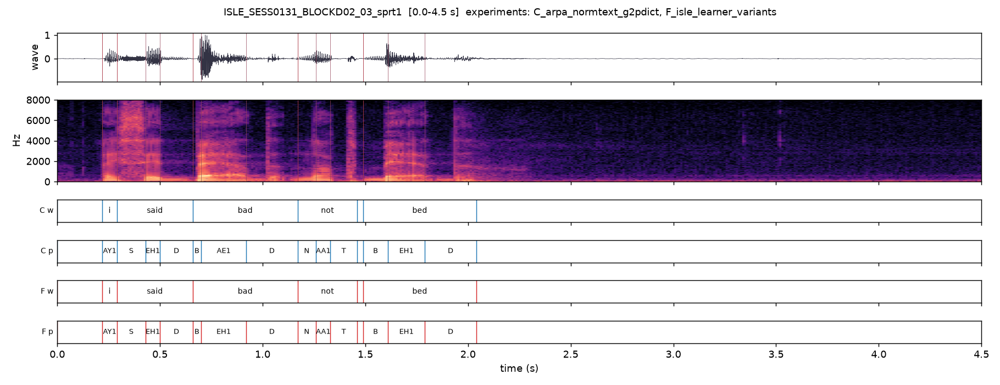

| Utterances | Source | Duration | Content |
|---|---|---|---|
| F2BJRLP1–3 | BU Radio Corpus, speaker f2b (news reading) | 25.3 / 28.7 / 30.7 s | multi-sentence news story, many proper names |
| ISLE_SESS0131_BLOCKD02_01–03 | ISLE non-native English corpus | 4.1 / 3.9 / 4.5 s | minimal pairs: "I said white not bait", "new not no", "bad not bed" |
Problem 1: audio format. The three BU files are NIST SPHERE files (header NIST_1A, 1024-byte header, 16 kHz, 16-bit little-endian PCM) with a .wav extension. Standard WAV readers reject them. prepare_data.py parses the SPHERE header and rewrites them as RIFF WAV. The ISLE files were already valid 16 kHz WAV.
Problem 2: transcripts. The BU transcripts contain line breaks, runs of spaces, numbers split across a hyphen (seventy- six), initialisms (S.J.C.'s, WBUR's) and a prefixed word (de-politicize). I normalized them to what was spoken. Initialisms are read letter by letter (s j c's, w b u r's), split numbers are joined, and punctuation is removed. Both raw and normalized corpora are kept so the effect can be measured (experiments A vs B).
| Dictionary | Size | OOV on raw text | OOV on normalized text |
|---|---|---|---|
| english_us_arpa (ARPAbet) | 199,860 | de-politicize, dukakis, maffy, melnicove, s.j.c.'s, wbur's | depoliticize, dukakis, maffy, melnicove |
| english_us_mfa (IPA-like) | 61,061 | 11 words, incl. state's, year's, hennessy's, judgeships, margo | 11 words, incl. the letter possessives c's, r's |
OOVs were passed to the matching pretrained G2P model. G2P is clearly weaker on un-normalized input. On the raw token wbur's the ARPA G2P produced B ER0 Z ("burs"), and on s.j.c.'s it produced S JH K S. Even on normalized text it made errors, which I corrected by hand (MANUAL_OVERRIDES):
| Word | G2P output | Hand-checked |
|---|---|---|
| depoliticize (ARPA) | D EH1 P AH0 L AY1 T AH0 S AY2 Z | D IY0 P AH0 L IH1 T AH0 S AY2 Z |
| dukakis (ARPA) | D UW1 K AA1 K IH0 S | D UW0 K AA1 K AH0 S |
| c's (MFA) | kʰ z | s iː z |
| r's (MFA) | ɹ z | ɑ ɹ z |
The final custom dictionary is the stock dictionary + G2P entries + these overrides. Without it, MFA maps each OOV word to the garbage phone spn, which spans the whole word with no phone boundaries inside it.
All runs use mfa align … --beam 100 --retry_beam 400. The wider beam is needed for the 25–31 s BU utterances.
| ID | Acoustic model | Text | Dictionary | Aligned | spn phones | Phones | % at 30 ms min. | Mean phone |
|---|---|---|---|---|---|---|---|---|
| A | english_us_arpa | raw | stock | 6/6 | 6 | 1022 | 7.4 | 78.9 ms |
| B | english_us_arpa | normalized | stock | 6/6 | 5 | 1031 | 7.9 | 78.2 ms |
| C | english_us_arpa | normalized | custom | 6/6 | 0 | 1063 | 7.9 | 75.8 ms |
| D | english_mfa | normalized | custom (MFA) | 6/6 | 0 | 1043 | 9.3 | 82.3 ms |
| E | english_us_arpa adapted on this corpus | normalized | custom | 6/6 | 0 | 1063 | 7.8 | 75.8 ms |
| F | english_us_arpa | ISLE only | learner variants | 3/3 | 0 | 38 | 0.0 | 136.6 ms |
| G | trained from scratch on these 6 files (mfa train) | normalized | custom | 6/6 | 0 | 1055 | 66.2 | 69.8 ms |
For each pair of experiments with identical word sequences, I compared every word start/end time.
| Pair | Boundaries | Mean |Δ| | Median | Within 20 ms | Max |
|---|---|---|---|---|---|
| B (stock dict) vs C (custom dict) | 486 | 0.5 ms | 0 | 99.2 % | 20 ms |
| C (ARPA) vs E (ARPA adapted) | 486 | 0.1 ms | 0 | 100 % | 10 ms |
| C (ARPA) vs D (english_mfa) | 486 | 18.5 ms | 10 ms | 90.1 % | 2460 ms |
| C (ARPA) vs G (trained from scratch) | 486 | 826.5 ms | 730 ms | 1.4 % | 3010 ms |



MFA's HMMs have 3 states with a 10 ms frame shift, so no phone can be shorter than 30 ms. In experiment C, 7.9 % of phones sit exactly at this floor. They are concentrated in the fast news speech and are dominated by T (16) and N (14), then AH0, R, L and D. Typical cases: important and appointment (N–T clusters), current, seventy, and function words (the, and, it). These are places where the reader reduces or deletes sounds (unreleased /t/, nasalized vowel instead of a full /n/). The aligner must still give every dictionary phone 30 ms, so it steals time from neighbours. Boundaries there are only accurate to about ±30 ms, and the phones may not really be present. english_mfa shows this more often (9.3 %), likely because its phone set is larger.
In two of three ISLE clips, english_mfa stretched the last word over 2–3 s of silence (see §3). ARPA did not. Short utterances with long trailing silence are a known weak spot. The other model's output or a voice-activity check would catch it.
With a single pronunciation per word, MFA always aligns the canonical phones, even if the speaker said something else. In experiment C, "bad" is aligned as B AE1 D regardless of what was said. To test this, experiment F gives each ISLE target word typical learner variants (e.g. bad: B AE1 D | B EH1 D | B AE1 T; new: N UW1 | N Y UW1 | N OW1) and lets the aligner choose.
| Clip | Word | Chosen variant (F) | F1/F2 at 30 % → 50 % → 70 % (Hz) |
|---|---|---|---|
| 01 | white | W AY1 T | 623/1227 → 630/1404 → 717/1693 (diphthong glide) |
| 01 | bait | B EY1 T | 523/1712 → 421/1896 → 324/2051 (diphthong glide) |
| 02 | new | N Y UW1 | 319/1417 → 288/2336 → 301/2160 (fronted /u/) |
| 02 | no | N OW1 | 391/961 → 389/854 → 262/705 (back vowel) |
| 03 | bad | B EH1 D | 514/1808 → 600/1773 → 629/1613 |
| 03 | bed | B EH1 D | 521/1903 → 533/1846 → 571/1760 |
Formants were measured with my own LPC implementation (resampled to 11 kHz, order 12, 25 ms frames), matching Praat's default 5.5 kHz ceiling. The bad/bed vowels differ by only ~60 Hz in F1. A native /æ/ is typically 150–300 Hz more open than /ɛ/. The acoustic evidence and the aligner's choice agree: this learner does not clearly realize the /æ/–/ɛ/ contrast, a common difficulty for L2 English speakers. The other pairs are realized as intended. Caveat: one token per word, and the speaker's sex is unknown, so this is suggestive rather than conclusive. It does show how forced alignment with pronunciation variants can serve as a simple mispronunciation detector.
MFA's own tokenizer already handles line breaks and most punctuation, so A and B align identically on the shared words. The real gain is on the six problem tokens: without normalization they become OOVs, and G2P on wbur's/s.j.c.'s gives unusable pronunciations.